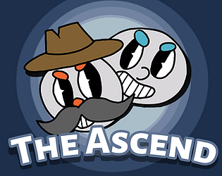
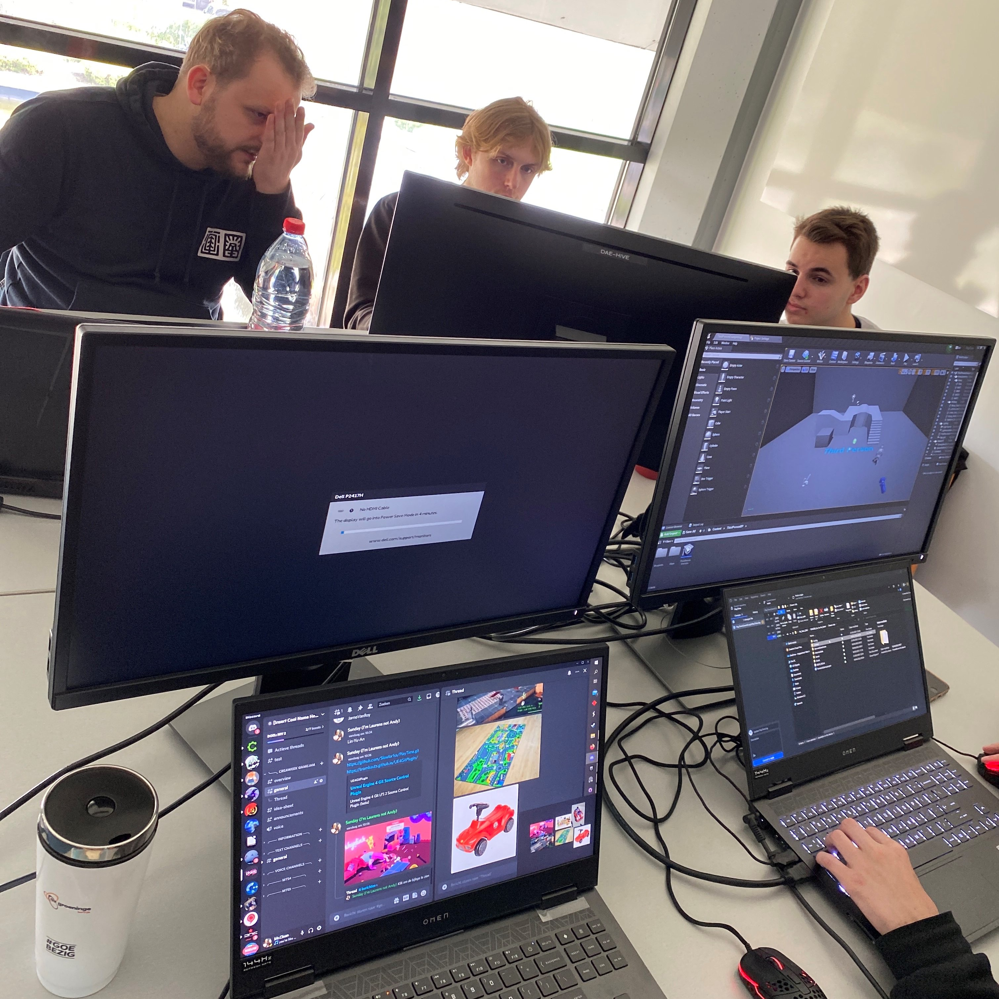

Portfolio work
The Ascend
The Ascend is a game project I worked on in a team. The only requrement that we had was to make a local co-op game.
8080 emulator
This is a 8080 prosessor im currently working on
It will be fully written in C++, I mainly started this project to learn about emulator development and to do some low level programming.
Research
This was a research project I did about reinforcement learning in 2D shooter games.

Game Jam
This is my first game jam I ever attended, it was made in unreal and version controlled by perforce.